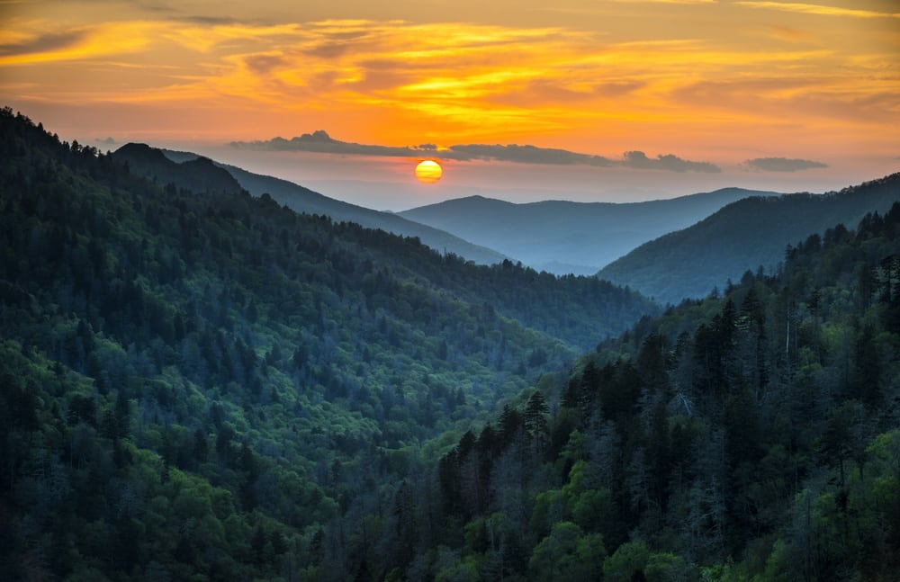

Hobbies
I have quite a bit of hobbies but if I had to tone it down to three I would choose cycling, non-fiction reading and the great out doors.
Cycling

I am a big fan of taking a break during the week to go on a long brisk bike ride. I like the workout and that feeling of accomplishment at the end of the ride. Most importantly no matter how busy my life or my fellow riders lives are we still make it to our weekly rides. It brings us together!
Non-Fiction Reading

I do enjoy lots of genres of books but my favorite by far is Non-fiction. I enjoy non-fiction reading the most due to the satisfaction I get from learning and using something new. Non-fiction lets the reader carry the facts however they please, me personally I make a story about the information instead of the author doing it for me!
The Great Outdoors
There is so much to love about nature but to keep this small I will be brief. When I feel stressed or just want some leisure time I will get outside. Ever since I was a small boy the sight of trees or the sound of the animals would give me joy. After all who doesn't love nature?
Fun facts about me
- I live and operate in Lancaster, PA.
- My favorite color is red.
- I am 17 years old
- I go to Thaddeus Stevens College of Technology
- My favorite food is PB and J.
- I am a broncos fan and Nadal supporter